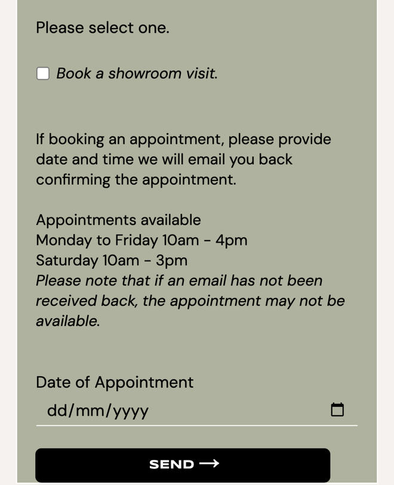
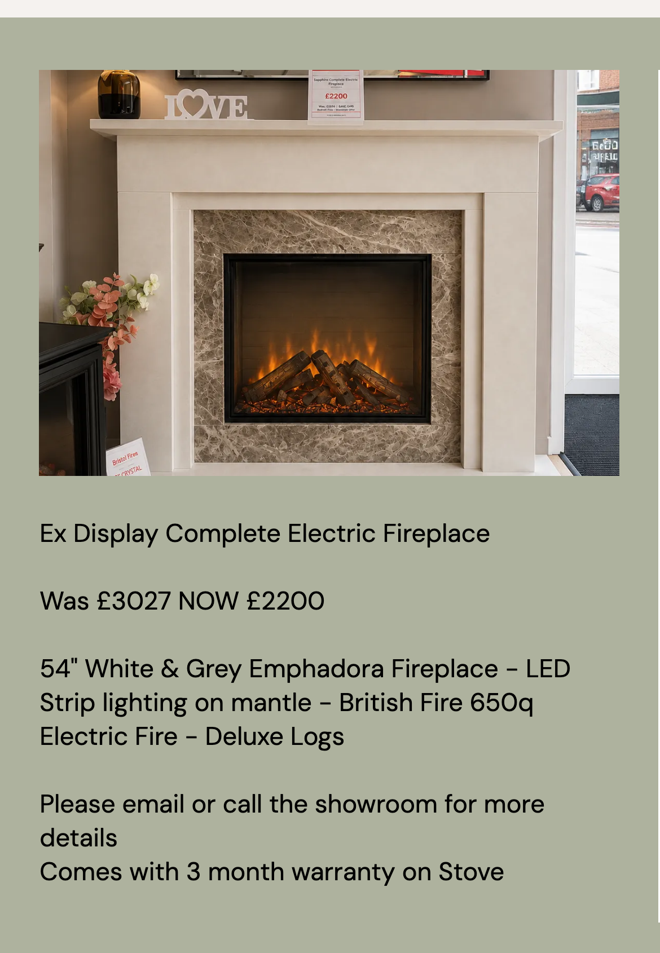

Debrett Fires: showroom visits and surveys booked straight away
I went through your website on a phone, the way someone choosing a new fire or stove would, and read your contact page, special offers, FAQs and customer stories. It shows a family business people trust, with a showroom worth the trip. Where I think you'd save time and win more sales is in how visits, surveys and offers get booked.
What's already working
Three things I'd change
Let customers pick their showroom slot
Your contact page asks for a date, then says "we will email you back confirming the appointment" and "if an email has not been received back, the appointment may not be available". The form has a box for the date but not the time.

Until your email arrives, the customer doesn't know if the slot is theirs. In your busy winter season, that's an email to write for every booking and a customer left waiting.
- Your booking page shows the free slots, Monday to Friday 10am to 4pm and Saturday 10am to 3pm.
- They pick one, say whether they're after gas, electric or a stove, and get a confirmation straight away, with a reminder the day before.
- The visit lands in your diary with who's coming and what they want, so the right adviser is free.
Let people reserve an ex-display offer
Your special offers page lists pieces like the "Ex Display Complete Electric Fireplace" at "Was £3027 NOW £2200". Under the pieces it says "Please email or call the showroom for more details", and there's no way to secure one online.

Each ex-display piece is a one-off. Someone looking at the offers in the evening can't secure it until the showroom opens, and by then they may have cooled off or someone else has asked.
- Each offer gets a Reserve button, and the customer pays a holding deposit by card.
- The piece shows as reserved on the page, so nobody else rings about it.
- You get a message with their details and arrange the survey, delivery or collection.
Book the free home survey online
Your homepage has a "Book a Free Survey" button and invites people to "arrange a free home survey", but the booking form's only option is "Book a showroom visit."
A survey request means a call or email to agree a time, then a visit where the surveyor sees the fireplace for the first time.
- The customer picks a survey slot from your surveyors' diary.
- They add photos of the room, the fireplace and the chimney breast, and say which fuel they're thinking of.
- Your surveyor arrives knowing what's there, with the right brochures and samples to hand.
Your website, answering for you
An assistant that answers the questions you get asked again and again, at any hour. These answers come only from your own website: your homepage, contact page, FAQs and services page.
Anything it can't answer, it passes to you with the customer's details.
What happens next
For five local businesses I'm setting up one of these for free, in return for an honest review. Pick whichever would help most.
I'm Tom Williams and I run Tomoni-AI. If a 20-minute chat would help, reply to my email or give me a ring.
Call 07971 512158Email Tom